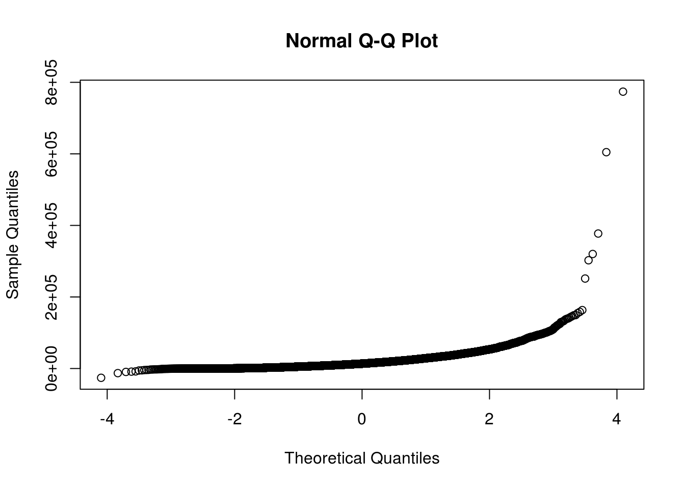
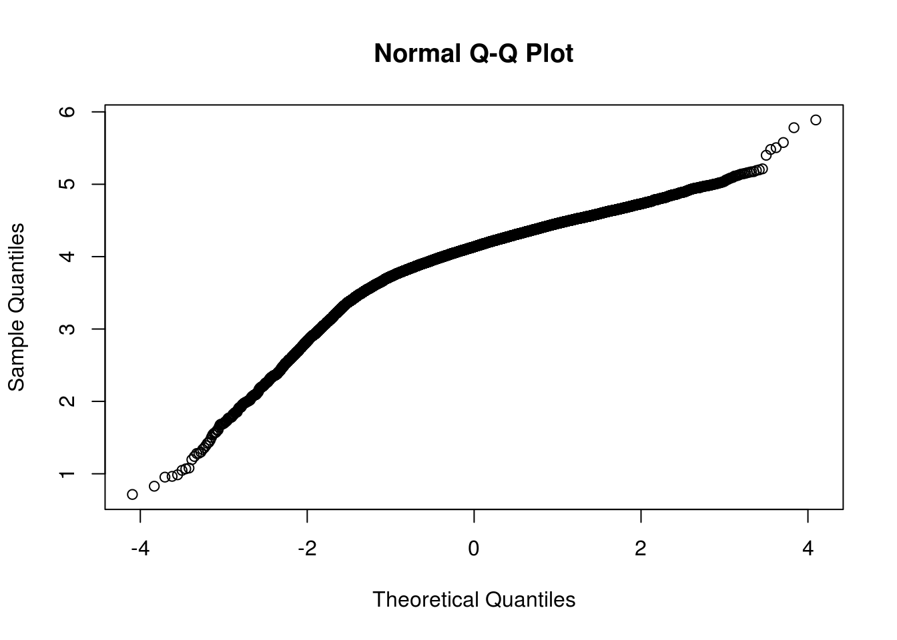
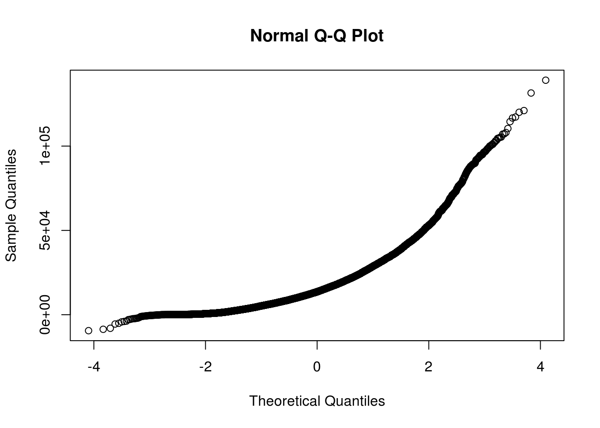
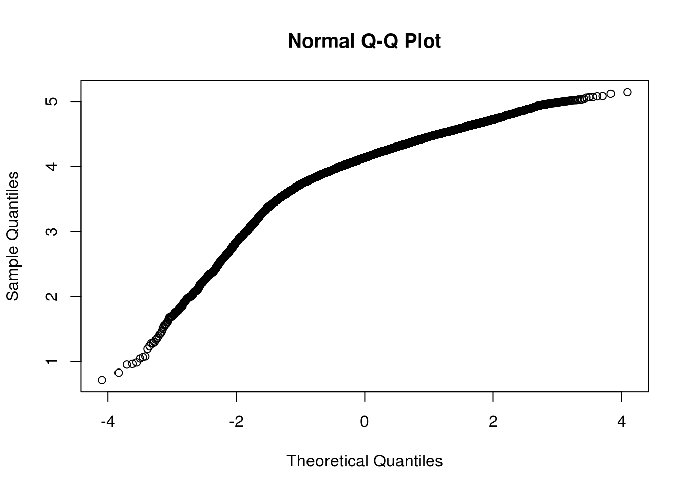
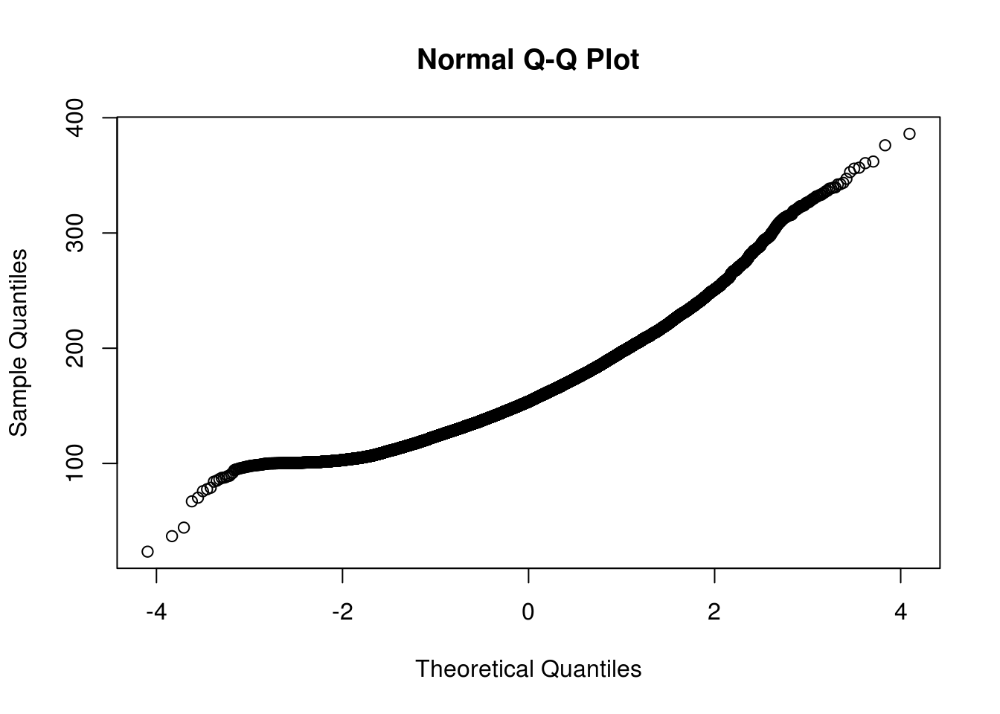
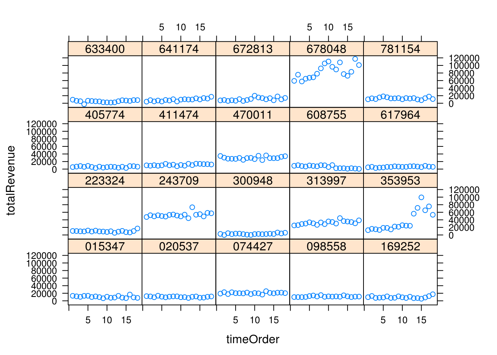

Set paths and load dependencies
## [1] "/mnt/hgfs/projects/insight/models/glmmlasso"## Loading required package: car
## Loading required package: RMySQL
## Loading required package: DBI
## Loading required package: glmmLasso
## Loading required package: latticeGet monthly revenue (18-mth time series for 1487 stores)
## Warning in .local(conn, statement, ...): Decimal MySQL column 2 imported as
## numeric## [1] TRUE## yr_month storeID totalRevenue
## 1 201312 000026 7308.46
## 2 201401 000026 7471.27
## 3 201402 000026 7058.72Remove 158 stores with short time series (13 < mths)
##
## 1 2 3 4 5 6 7 8 9 10 11 12 13 14 15
## 5 13 18 22 14 11 15 8 14 10 15 13 8 13 15
## 16 17 18
## 18 27 1248Histogram indicate outliers. Remove using Hampel’s rule (5 std devs) and >150,000 or <-10,000
1327 stores remain
totRev_mt1yr=totRev[!(totRev$storeID %in% rmStores),]
summary(totRev_mt1yr$totalRevenue)## Min. 1st Qu. Median Mean 3rd Qu. Max.
## -25880 7508 13650 17170 22820 774000qqnorm(totRev_mt1yr$totalRevenue)
qqnorm(log10(totRev_mt1yr$totalRevenue))## Warning in qqnorm(log10(totRev_mt1yr$totalRevenue)): NaNs produced
#check which stores consistently have outlier values
totRev_mt1yr[hampel(totRev_mt1yr$totalRevenue,t=8),]## yr_month storeID totalRevenue
## 3354 201412 059699 251579.80
## 3355 201501 059699 302624.01
## 3356 201502 059699 320210.04
## 3357 201503 059699 377381.53
## 3358 201504 059699 604828.50
## 3359 201505 059699 774014.80
## 4499 201412 087882 105173.19
## 4500 201501 087882 101816.79
## 4501 201502 087882 100973.30
## 4577 201503 089753 139077.78
## 4579 201505 089753 98877.68
## 4607 201409 090050 103100.29
## 4610 201412 090050 100057.10
## 10144 201502 335986 107097.90
## 10145 201503 335986 121068.45
## 10671 201502 353953 99420.80
## 11731 201312 393309 122587.29
## 11732 201401 393309 109378.53
## 11733 201402 393309 114113.53
## 11734 201403 393309 146514.87
## 11736 201405 393309 139956.34
## 11737 201406 393309 142045.88
## 11738 201407 393309 125032.35
## 11739 201408 393309 129616.69
## 11740 201409 393309 148954.60
## 11741 201410 393309 123870.12
## 11742 201411 393309 137759.96
## 11743 201412 393309 149414.76
## 11744 201501 393309 130235.55
## 11745 201502 393309 132616.82
## 11746 201503 393309 158338.26
## 11747 201504 393309 135474.67
## 11748 201505 393309 144428.18
## 12474 201410 410092 103380.93
## 12476 201412 410092 120065.99
## 12477 201501 410092 107258.15
## 12480 201504 410092 102205.68
## 12481 201505 410092 104765.19
## 13019 201503 419849 100084.82
## 13020 201504 419849 131492.70
## 13021 201505 419849 154931.38
## 15197 201406 503847 114508.99
## 15208 201505 503847 116664.50
## 15221 201412 504428 100545.48
## 15226 201505 504428 104590.30
## 16353 201505 550332 163362.37
## 19134 201408 678048 105366.92
## 19135 201409 678048 110432.26
## 19138 201412 678048 108041.22
## 19142 201504 678048 117243.10
## 19143 201505 678048 101035.93sort(table(totRev_mt1yr$storeID[hampel(totRev_mt1yr$totalRevenue,t=5)]),dec=T)##
## 090050 157784 193615 393309 410092 087882 678048 504428 060830 503847
## 18 18 18 18 18 16 15 14 10 10
## 193623 410068 059699 335986 376529 239002 419849 861446 973655 057620
## 7 7 6 6 6 5 5 5 5 4
## 000417 002699 089753 242715 353953 392406 649415 003244 026757 034603
## 3 3 3 3 3 2 2 1 1 1
## 053579 243709 250113 282434 404661 501726 528723 533414 550332 662748
## 1 1 1 1 1 1 1 1 1 1
## 663989 812904 914967 952655
## 1 1 1 1sort(table(totRev_mt1yr$storeID[totRev_mt1yr$totalRevenue>(150000)]),dec=T)##
## 059699 393309 419849 550332
## 6 1 1 1sort(table(totRev_mt1yr$storeID[totRev_mt1yr$totalRevenue<(-10000)]),dec=T)##
## 652229 685096
## 1 1#view store of interest
totRev_mt1yr[totRev_mt1yr$storeID=="550332",]## yr_month storeID totalRevenue
## 16336 201312 550332 26723.83
## 16337 201401 550332 29950.83
## 16338 201402 550332 35711.36
## 16339 201403 550332 14091.84
## 16340 201404 550332 23351.15
## 16341 201405 550332 32020.80
## 16342 201406 550332 35412.85
## 16343 201407 550332 21963.29
## 16344 201408 550332 26338.75
## 16345 201409 550332 26867.69
## 16346 201410 550332 23812.55
## 16347 201411 550332 20328.79
## 16348 201412 550332 25118.26
## 16349 201501 550332 21183.84
## 16350 201502 550332 27762.78
## 16351 201503 550332 30451.87
## 16352 201504 550332 27026.74
## 16353 201505 550332 163362.37outlierStores=c("059699", "393309")
maybeOutlierStores=c("090050","157784","193615","393309","087882","678048","504428","060830","503847")
outlierOccasional=c("652229","685096","550332")
dim(totRev_mt1yr) #23722 3## [1] 23722 3#remove ocassional outliers
totRev_mt1yr=totRev_mt1yr[!(totRev_mt1yr$totalRevenue<(-10000)),]
totRev_mt1yr=totRev_mt1yr[!(totRev_mt1yr$totalRevenue>150000),]
dim(totRev_mt1yr) #23711 3## [1] 23711 3#remove outlier stores
totRev_mt1yr=totRev_mt1yr[!(totRev_mt1yr$storeID %in% outlierStores),]
dim(totRev_mt1yr) #23682 3## [1] 23682 3summary(totRev_mt1yr$totalRevenue)## Min. 1st Qu. Median Mean 3rd Qu. Max.
## -9448 7500 13630 16960 22770 139100qqnorm(totRev_mt1yr$totalRevenue)
qqnorm(log10(totRev_mt1yr$totalRevenue))## Warning in qqnorm(log10(totRev_mt1yr$totalRevenue)): NaNs produced
qqnorm(sqrt(totRev_mt1yr$totalRevenue+10000))
#model totalRevenue (without log transformation)
length(unique(totRev_mt1yr$storeID)) #1327 stores## [1] 1327Remove columns (sparse, near-constant and highly correlated variables)
and rows (>50% NA).
Use storePerCapita instead of numCompetitor and competitionDensity (all highly correlated!)
1109 stores and 69 variables remain (of 1437 stores x 109 variables)
## Load store data (1437 stores x 109 variables)
load(file=paste0(ProjectPath,"/insight/data/dsStore.RData"),verbose=T) #store level## Loading objects:
## dsStoreexcludeVarID=grep("storeID|zip|city|fip|county|^state$|Type|numCompetitor|competDensity",colnames(dsStore))
colnames(dsStore)[excludeVarID]## [1] "storeID" "zip" "city" "fip"
## [5] "county" "state" "busType" "bizType"
## [9] "numCompetitor" "competDensity"dsMat=dsStore[dsStore$storeID %in% unique(totRev_mt1yr$storeID),]
rownames(dsMat)=dsMat$storeID
dsMat=dsMat[order(dsMat$storeID),-excludeVarID]
dim(dsMat) #1194 100## [1] 1194 100save(dsMat,file=paste0(ProjectPath,"/insight/data/dsMat.RData"))
#ensure matrix is numeric
tmp=as.matrix(dsMat)
mode(tmp)="numeric"
#remove constant or highly correlated variables (1437 stores)
tmp2=rmCol(tmp,maxFracConstant=0.99,minSD=0.001,maxR2=0.9,maxNA=0.3)## Drop variables with > maxNA ratio: 1
## Drop constant/near-constant variables: 30
## Drop low-variance variables: 0
## Drop highly correlated variables: 0#remove the 1 NA variables and 30 variables
setdiff(colnames(tmp),colnames(tmp2))## [1] "others"
## [2] "Homicide.rate"
## [3] "Agriculture_Forestry_Fishing_and_Hunting"
## [4] "Mining_Quarrying_and_Oil_and_Gas_Extraction"
## [5] "Utilities"
## [6] "Construction"
## [7] "Wholesale_Trade"
## [8] "retailInd"
## [9] "Information"
## [10] "Real_Estate_and_Rental_and_Leasing"
## [11] "Offices_of_Physicians"
## [12] "Offices_of_Dentists"
## [13] "Offices_of_Other_Health_Practitioners"
## [14] "Outpatient_Care_Centers"
## [15] "Medical_and_Diagnostic_Laboratories"
## [16] "Home_Health_Care_Services"
## [17] "Other_Ambulatory_Health_Care_Services"
## [18] "Psychiatric_and_Substance_Abuse_Hospitals"
## [19] "Specialty_except_Psychiatric_and_Substance_Abuse_Hospitals"
## [20] "Nursing_Care_Facilities_Skilled_Nursing_Facilities"
## [21] "Residential_Intellectual_and_Developmental_Disability_Mental_Health_and_Substance_Abuse_Facilities"
## [22] "Continuing_Care_Retirement_Communities_and_Assisted_Living_Facilities_for_the_Elderly"
## [23] "Other_Residential_Care_Facilities"
## [24] "Individual_and_Family_Services"
## [25] "Community_Food_and_Housing_and_Emergency_and_Other_Relief_Services"
## [26] "Vocational_Rehabilitation_Services"
## [27] "Child_Day_Care_Services"
## [28] "Arts_Entertainment_and_Recreation"
## [29] "Accommodation_and_Food_Services"
## [30] "Other_Services_except_Public_Administration"
## [31] "nUnclassifiedBiz"rownames(tmp2)=rownames(dsMat)
#remove 85 stores with a lot of NAs (1342 stores remained)
#Median impute the remaining
#use psych::fa which allows NA values (built-in meidan imputation)
dsMat_rmColRow=rmRow(tmp2,maxNA=0.5)## Drop rows with > maxNA ratio: 85
## Drop duplicated rows: 0#view how many NAs
emptyStore=setdiff(rownames(tmp2),rownames(dsMat_rmColRow))
tmp3=tmp2[emptyStore,]
save(dsMat,dsMat_rmColRow,file=paste0(ProjectPath,"/insight/data/dsMat.RData"))Skip previous chunk if already preprocessed.
#load(file=paste0(ProjectPath,"/insight/data/dsMat.RData"),verbose=T)
#Use dsMat_rmColRow which has NA and near-constant variables removed
dim(dsMat_rmColRow) #1109 69## [1] 1109 69head(dsMat_rmColRow,3)## retail medical population
## 000026 1 0 7678
## 000417 1 0 42410
## 001172 1 0 3682
## Population.that.is.not.proficient.in.English
## 000026 0.022
## 000417 0.021
## 001172 0.005
## Population.living.in.a.rural.area Uninsured Uninsured.adults
## 000026 1.000 0.219 0.237
## 000417 0.445 0.110 0.123
## 001172 1.000 0.213 0.243
## Uninsured.children Unemployment Income.inequality
## 000026 0.156 0.063 3.847
## 000417 0.078 0.046 3.992
## 001172 0.140 0.037 4.654
## Median.household.income storesPerCapita Premature.death
## 000026 53674 390.7268 3445
## 000417 53290 417.3544 5002
## 001172 35787 298.7507 10558
## Poor.or.fair.health Poor.physical.health.days
## 000026 NA NA
## 000417 0.104 3.1
## 001172 0.132 3.6
## Poor.mental.health.days Low.birthweight Adult.smoking Adult.obesity
## 000026 NA 0.07 NA 0.164
## 000417 1.9 0.06 0.217 0.278
## 001172 2.5 0.10 NA 0.206
## Food.environment.index Physical.inactivity
## 000026 8.1 0.128
## 000417 8.2 0.232
## 001172 7.5 0.225
## Access.to.exercise.opportunities Excessive.drinking
## 000026 0.824 0.274
## 000417 0.708 0.091
## 001172 0.855 NA
## Alcohol.impaired.driving.deaths Sexually.transmitted.infections
## 000026 0.167 145.1
## 000417 0.208 276.1
## 001172 0.222 266.6
## Teen.births Primary.care.physicians Dentists
## 000026 17.6 66 52
## 000417 41.6 113 66
## 001172 48.3 80 54
## Mental.health.providers Preventable.hospital.stays
## 000026 221 NA
## 000417 278 35.28
## 001172 27 86.07
## Diabetic.screening Mammography.screening High.school.graduation
## 000026 0.87 0.63 NA
## 000417 0.92 0.76 0.744
## 001172 0.84 0.43 0.505
## Some.college Children.in.poverty
## 000026 0.749 0.180
## 000417 0.644 0.181
## 001172 0.656 0.293
## Children.in.single.parent.households Social.associations
## 000026 0.190 14.512
## 000417 0.341 20.765
## 001172 0.244 13.330
## Violent.crime Injury.deaths Air.pollution...particulate.matter
## 000026 102.50 61.9 10.65
## 000417 176.82 58.4 13.18
## 001172 121.85 153.4 12.97
## Drinking.water.violations Severe.housing.problems
## 000026 0.001 0.216
## 000417 0.010 0.132
## 001172 0.026 0.128
## Driving.alone.to.work Long.commute...driving.alone Diabetes
## 000026 0.469 0.205 0.048
## 000417 0.813 0.148 0.084
## 001172 0.662 0.112 0.083
## HIV.prevalence.rate Premature.age.adjusted.mortality
## 000026 109.5 153.2
## 000417 45.6 248.6
## 001172 NA 484.9
## Infant.mortality Child.mortality Food.insecurity
## 000026 NA NA 0.135
## 000417 NA 39.6 0.097
## 001172 NA NA 0.126
## Limited.access.to.healthy.foods Motor.vehicle.crash.deaths
## 000026 0.013 NA
## 000417 0.085 13.95
## 001172 0.083 63.66
## Drug.poisoning.deaths Health.care.costs
## 000026 NA 6992
## 000417 3.4 6588
## 001172 NA 9422
## Could.not.see.doctor.due.to.cost Other.primary.care.providers
## 000026 NA 65
## 000417 0.09 50
## 001172 0.12 81
## Children.eligible.for.free.lunch AnnPayrollK nBiz manufacturing
## 000026 0.218 110891 6577.234 0.000000
## 000417 0.421 491671 2060.835 2.357934
## 001172 0.383 15971 1249.321 0.000000
## transportwarehousing Finance_and_Insurance
## 000026 0 0
## 000417 0 0
## 001172 0 0
## Professional_Scientific_and_Technical_Services
## 000026 0
## 000417 0
## 001172 0
## Management_of_Companies_and_Enterprises
## 000026 0
## 000417 0
## 001172 0
## Administrative_and_Support_and_Waste_Management_and_Remediation_Services
## 000026 0
## 000417 0
## 001172 0
## Educational_Services Health_Care_and_Social_Assistance
## 000026 0 0
## 000417 0 0
## 001172 0 0
## General_Medical_and_Surgical_Hospitals nClassifiedBiz
## 000026 0 0.000000
## 000417 0 2.357934
## 001172 0 0.000000Long form to accommodate revenue time series
Set time order for nlme
## [1] 19789 72## totalRevenue timeOrder yr_month storeID
## 1 7308.46 1 201312 000026
## 1582 7471.27 2 201401 000026
## 2676 7058.72 3 201402 000026selStore=sample(unique(datamat$storeID),20)
xyplot(totalRevenue~timeOrder|storeID,data=datamat[datamat$storeID %in% selStore,],col.line="black")
998 stores, 17804 rows for training
111 stores, 1985 rows for testing (10%) - same as those used for validating random forest model
tstStore=sample(unique(datamat$storeID),round(0.1*length(unique(datamat$storeID))))
trnMat=datamat[!(datamat$storeID %in% tstStore),] #18621 x 74
tstMat=datamat[datamat$storeID %in% tstStore,] #2074 x 74
length(unique(trnMat$storeID)) #998 stores, 17804 rows for training## [1] 998length(unique(tstMat$storeID)) #111 stores, 1985 rows for testing (10%)## [1] 111Save column means and std dev from training data for scaling test data later
As data is scaled to z-scores, perform zero-imputation (equivalent to mean-imputation)
Only trnMat and tstMat are scaled, datamat remains unscaled
#exclude the first 3 binary variables and last 3 categorical variables and totalRevenue response
columnMean=colMeans(trnMat[,3:70],na.rm=T)
columnSD=apply(trnMat[,3:70],2,sd,na.rm=T)
#Rescale continuous variables only (leave binary variables unscaled)
for(i in 3:70){
trnMat[,i]=(trnMat[,i]-columnMean[i-3])/columnSD[i-3]
tstMat[,i]=(tstMat[,i]-columnMean[i-3])/columnSD[i-3]
}
#Mean-imputation
trnMat[is.na(trnMat)]=0
tstMat[is.na(tstMat)]=0
save(columnMean,columnSD,trnMat,tstMat,tstStore,datamat,file="datamat.RData")